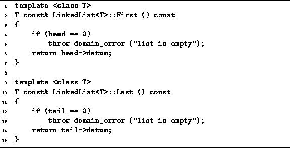

Data Structures and Algorithms
with Object-Oriented Design Patterns in C++
Data Structures and Algorithms
with Object-Oriented Design Patterns in C++
Two more LinkedList<T> class object accessors are
defined in Program  .
The First member function returns a const reference
to the first list element.
Similarly, the Last member function returns a const reference
to the last list element.
.
The First member function returns a const reference
to the first list element.
Similarly, the Last member function returns a const reference
to the last list element.

Program: LinkedList<T> Class First and Last Function Definitions
The code for both functions is almost identical.
In the event that the list is empty,
a domainerror  exception is thrown.
An exception is thrown because if the list is empty,
it is not possible even to create a return value--there is no T object instance to which to refer!
exception is thrown.
An exception is thrown because if the list is empty,
it is not possible even to create a return value--there is no T object instance to which to refer!
We will assume that in a bug-free program, neither the First nor the Last functions will be called for an empty list. In that case, the running time of each of theses functions is constant. I.e., T(n)=O(1).
 Copyright © 1997 by Bruno R. Preiss, P.Eng. All rights reserved.
Copyright © 1997 by Bruno R. Preiss, P.Eng. All rights reserved.